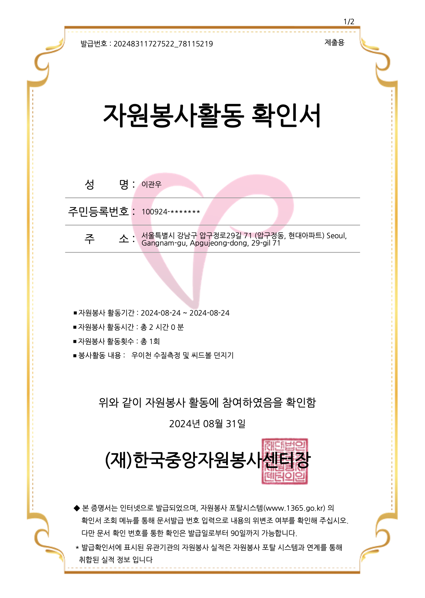
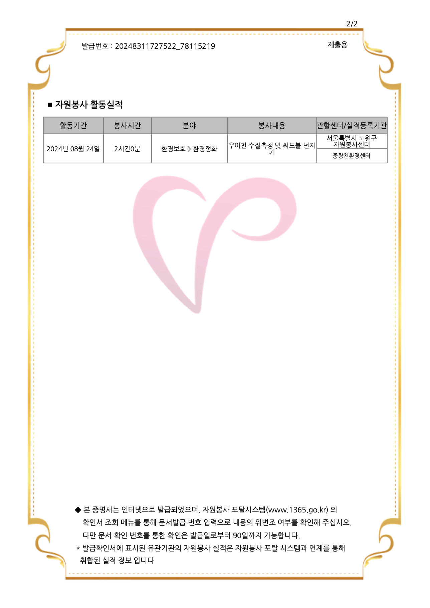

The volunteers that I’ve committed to were to support the environment by planting trees and removing trash in the community. After I got inspired by the second volunteer, who was making seed balls, I made my own club in the school to create awareness of the environment with trees.
 